Background
Most dating apps focus on building connections online first, often leading to shallow conversations and a lack of real chemistry when people finally meet. This creates a gap between digital interaction and genuine in-person connection.
Main Problem
How can we design a product that encourages people to meet and connect in person from the very beginning, helping them build authentic relationships right away?
Market Research
Digital Platform Analysis
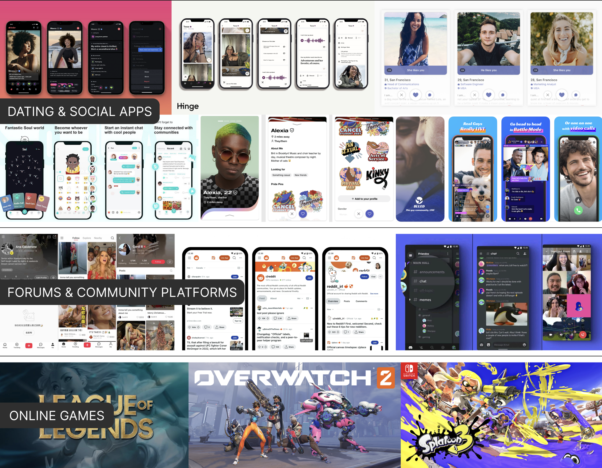 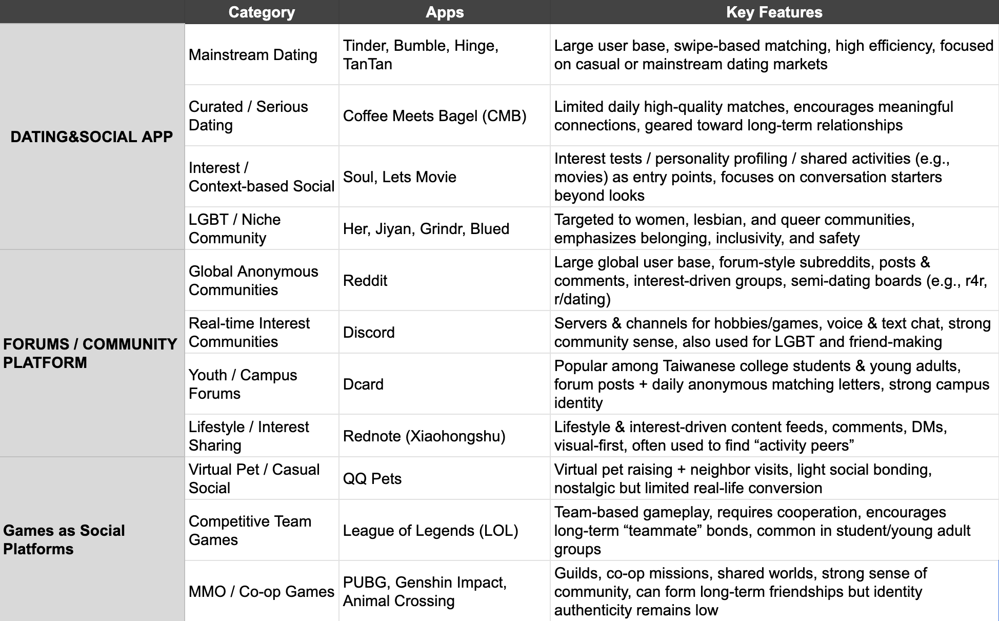Platform Comparison
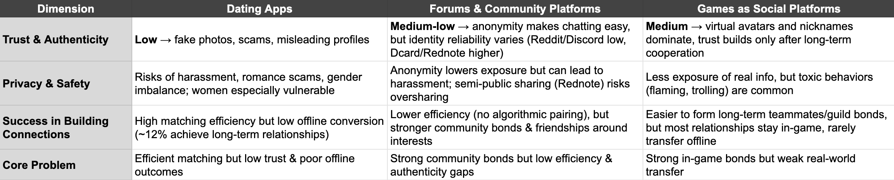 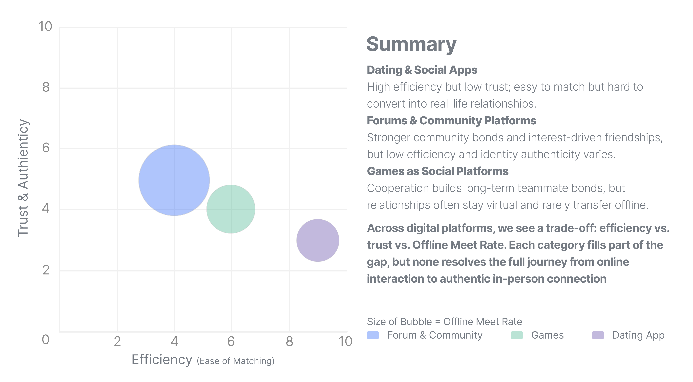Digital social platforms either maximize efficiency at the cost of trust, or foster community at the cost of conversion — leaving a persistent gap between online interaction and genuine offline connection.
Offline Social Approaches Analysis
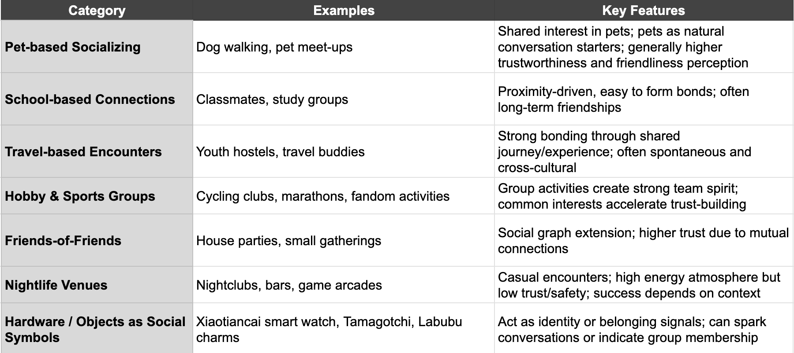Digital vs. Offline: Comparative Summary
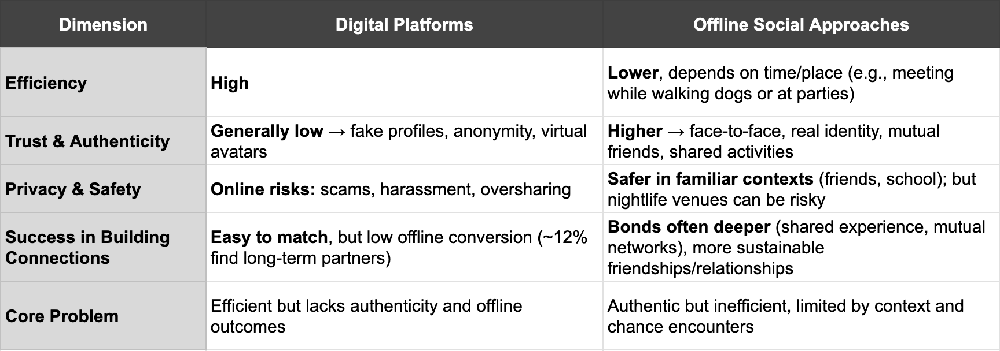 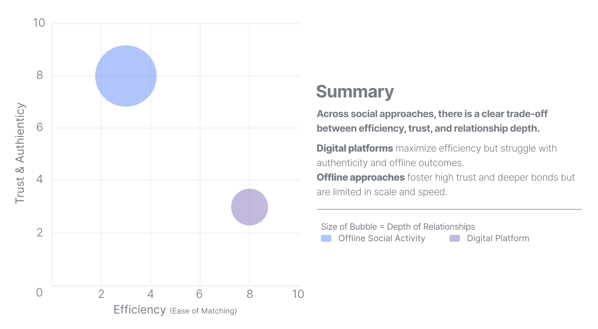Hybrid Models: Limitations & Case Study
Digital Platform Analysis
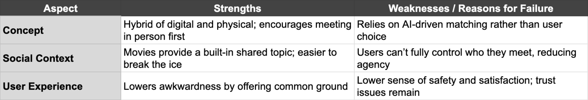How to combine the advantages of offline activity & digital platform?
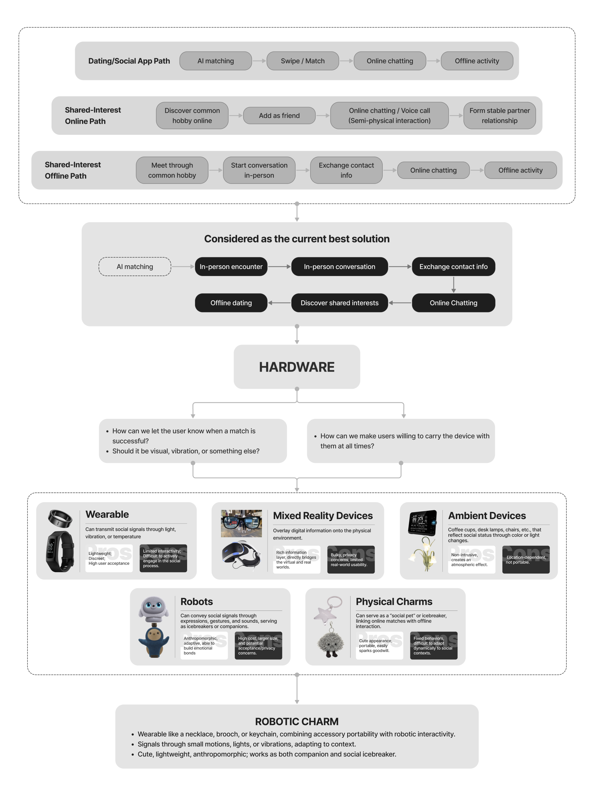
Existing Studies on Companion Robots
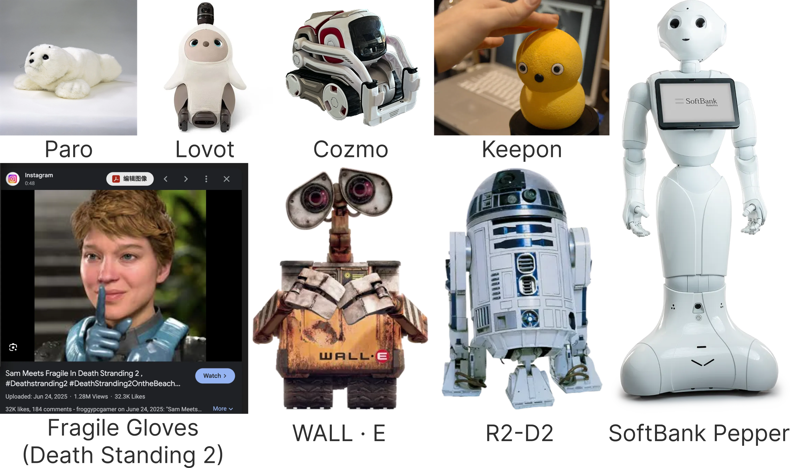 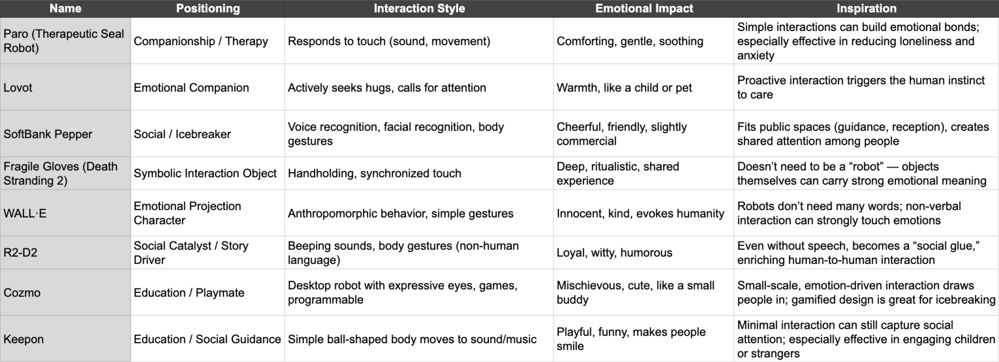Why Robot?
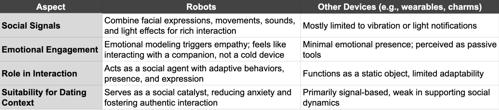 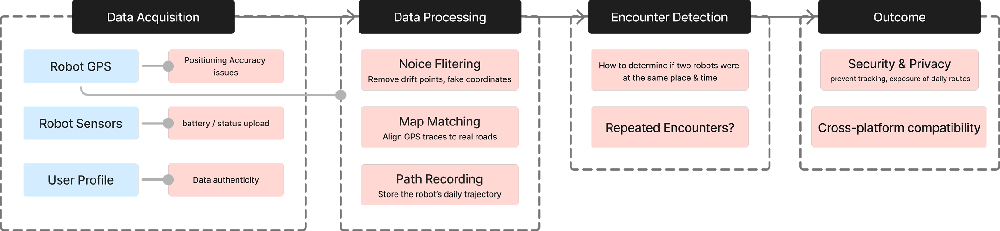